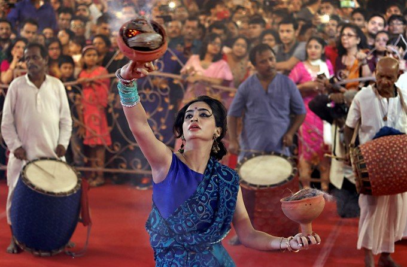

Durga is an ancient deity of Hinduism according to available archeological and textual evidence. However, the origins of Durga puja are unclear and undocumented. Durga Puja, major festival of Hinduism, traditionally held for 10 days in the month of Ashvina (September–October), the seventh month of the Hindu calendar, and particularly celebrated in Bengal, Assam, and other eastern Indian states. Durga Puja celebrates the victory of the goddess Durga over the demon king Mahishasura. It begins on the same day as Navratri, a nine-night festival celebrating the divine feminine.Durga puja is a ten-day event, of which the last five days involve certain rituals and practices. The festival begins with Mahalaya, a day on which Hindus perform tarpaṇa by offering water and food to their dead ancestors. The day also marks the advent of Durga from her mythological marital home in Kailash. The next significant day of the festival is the sixth day (Sashthi), on which devotees welcomes the goddess and festive celebrations are inaugurated. On the seventh day (Saptami), eighth (Ashtami) and ninth (Navami) days, the goddess along with Lakshmi, Saraswati, Ganesha, and Kartikeya are revered and these days mark the main days of worship with recitation of scriptures, puja, legends of Durga in Devi Mahatmya, social visits to elaborately decorated and illuminated pandals (temporary structures meant for hosting the puja), among others.
A different kind of Durga Puja in 2020, all thanks to Corona. Funny right??. Not-at-all. The pandemic has forced most of us to remain indoors and limit the festivities, but no virus has the ability to dampen a Bengali’s Durga Puja spirit. So what if there are a few pandals? A Bengali can celebrate Durga Puja from anywhere — even from homes!
The Calcutta High Court order making Durga Puja pandals “no entry zones”, and the awareness generated by the administration in asking people to stay indoors to contain the COVID-19 pandemic, seemed to have worked as there were fewer people on the streets in Kolkata during the peak of Durga Puja festivities On October 23, when the State celebrated Saptami, the Kolkata Metro, which is considered the lifeline of transport in the city, ferried about 34,000 passengers. On a usual weekday before the Puja, the North South line of Kolkata Metro typically ferries more than twice the number of passengers. For instance, on October 21, 84,801 commuters had availed the services of the Kolkata Metro. On Saturday, October 24, the day when Astami is observed till 7 p.m. in the evening, only 24,300 passengers took the metro ride. Kolkata Metro officials said that there was hardly any crowd in the trains and on the platforms today. Unlike previous years, the Kolkata Metro has decided not to run special overnight trains to manage the Durga Puja crowd. The last trains are leaving the terminal station at 9 p.m.Meanwhile, a few incidents have come to the fore in the past few days, when the Kolkata Police had to asked Durga Puja pandals not to allow visitors in the pandals. From north Kolkata to south Kolkata, Puja pandals did not have much by of crowds. While people did descend on the streets in some areas, crowding in the Durga Puja pandals was largely avoided. In districts and towns of the State, the situation was the same and not much crowding was observed inside pandals. There are a number of other factors that led to fewer crowds this Durga Puja, officials said. While people have become aware that crowding could lead to a spike in infections, suburban and local trains are also not plying, which makes it difficult for people from the districts to soak in the festivities in the city. Meanwhile, the rituals related to Durga Puja like Anjali (offering of flowers) and Kumari Puja, were observed across all community Durga Pujas in the State. There are about 37,000 community Durga Pujas in the State, of which 3,000 are organised in Kolkata.
Low-key immersion marks end of Durga Puja festival in West Bengal, during COVID19
Coronavirus: Kolkata's wait for Durga Puja 2021 begins. 'Asche bochor abar hobe'